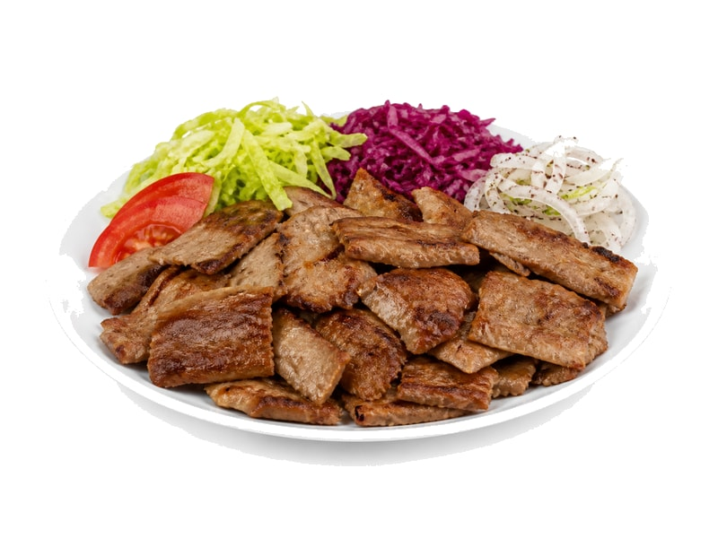

Fast food
Kebab na talerzu
Kebab na talerzu: 11 g białka, 140 kcal, 14 g węglowodanów i 6 g tłuszczu na 100 g. Kategoria: Fast food.
Kalorie140 kcalna 100 g
Białko / proteiny11 g
Węglowodany14 g
Tłuszcz6 g
Cena (szac.)~4,00 złza 100 g
Ceny zaktualizowano: maj 2026 (szacunek — ceny w popularnych supermarketach)
Porcja: porcja (400g)
| Kalorie | 560 kcal |
|---|---|
| Białko | 44 g |
| Węglowodany | 56 g |
| Tłuszcz | 24 g |
| Cena (szac.) | ~15,99 zł |
Szczegółowe składniki odżywcze na 100 g
| Wartość energetyczna (kalorie) | 140 kcal |
|---|---|
| Białko (proteiny) | 11 g |
| Węglowodany | 14 g |
| Tłuszcz | 6 g |
| Tłuszcze nasycone | 2 g |
| Tłuszcze nienasycone | 4 g |
| Witaminy i minerały | Sód, Żelazo, Witamina B1 |
| Współczynnik kcal / 1 g białka | 12.7 |
| Cena produktu (szac. za 100 g) | ~4,00 zł |
| Cena za 100 g białka (szac.) | ~36,34 zł |